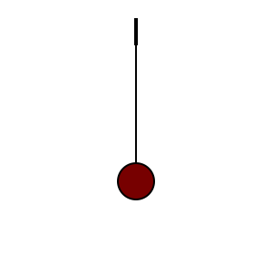
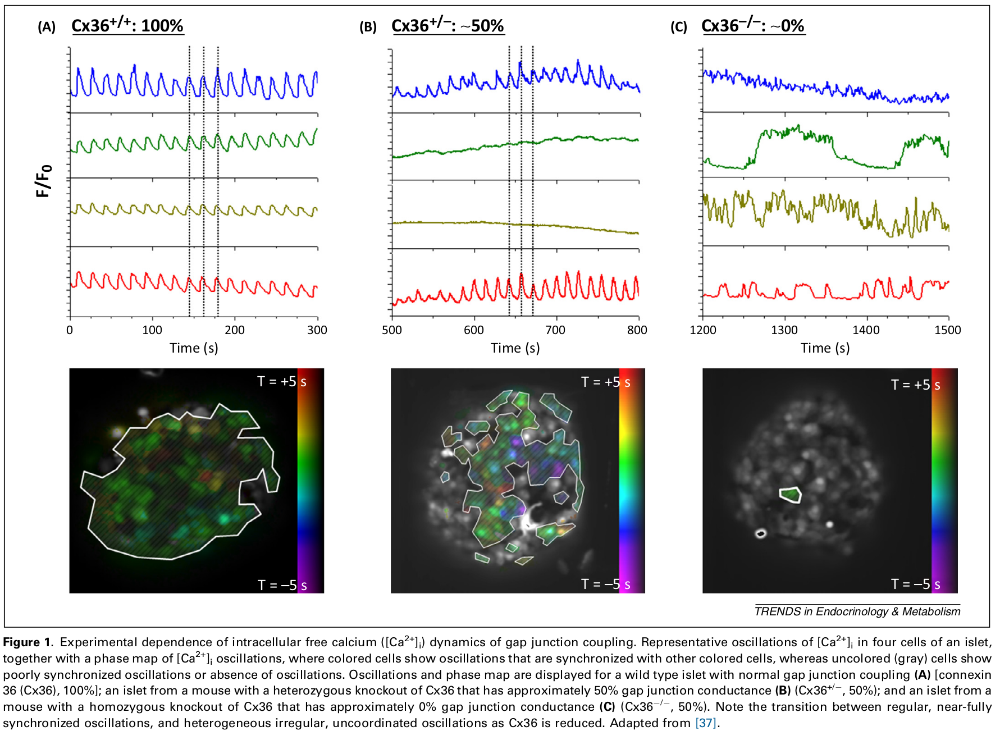
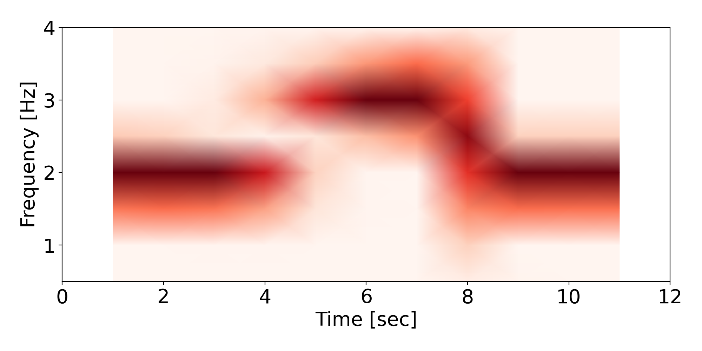
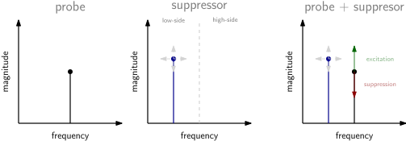
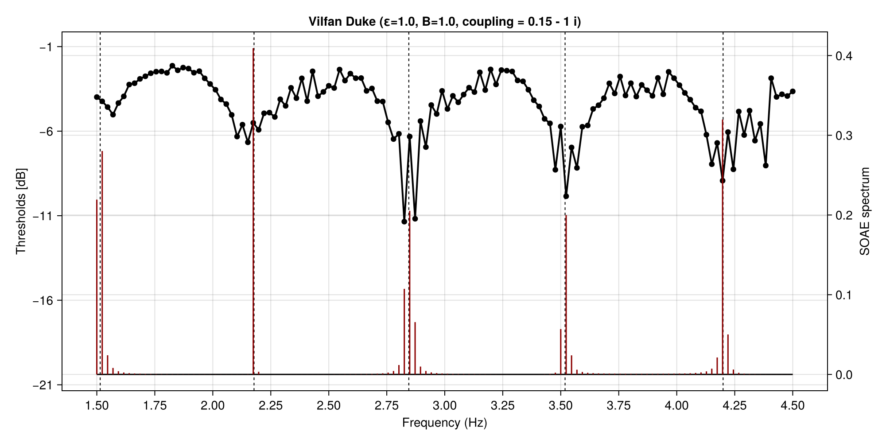
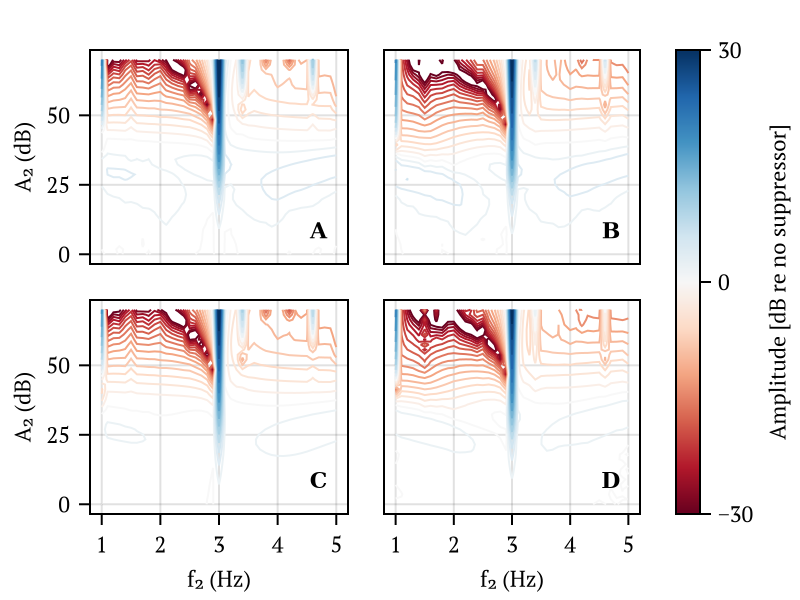

In sync
"Kan vi forstå hørelsens informationsbehandling ved at forstå fysiske fænomener?"
Bastian Epp, DTU Health Tech, Auditory Physics group
Hørelsen er unik

Vi kan IKKE genoprette hørelsen efter høretab! Hvad er det vi mangler?
Kan vi bruge "entrainment" til at forklare
spontant aktivitet,
selektivitet, og
høj sensitivitet
som er karakteristisk for hørelsen?
In sync
"Kan vi forstå hørelsens informationsbehandling ved at forstå fysiske fænomener?"
Bastian Epp, DTU Health Tech, Auditory Physics group
Noget i kender: Audiogram
"Hvad er den mindste intensitet lytteren kan høre?"

lumenlearning.com; Zwicker & Schloth (1984)
Sensitivitet er meget "lokalt"
Noget i også kender: Otoakustiske emissioner
"Der kommer lyd ud af øret!"
Kondziella et al. (2018);
Når vi afspiller toner, opstår der oscillationer i det indre øre.
Noget i måske kender: Spontane otoakustiske emissioner
"Der kommer lyd ud af øret - også uden stimuli!"
Bergevin & Salerno (2015); Uppenkamp (personal communication); Levy et al. (2016); Zwicker & Schloth (1984)
Der svinger noget i det indre øre - helt af sig selv!
Noget i har set før
Noget som svinger: En "normal" oscillator
Noget som svinger af sig selv: En "selvkørende" oscillator

Lige nu tænker vi i "normale" oscillatorer - misser vi noget ved ikke at se på "selvkørende" oscillatorer?
Hvad siger litteraturen?
Bugspytkirtlen - blodsukkeregulering
Synchronisering i "pancreatic islets"
Synchronized (wildtype) and non-synchronized (knock-out) cell activity
Benninger & Piston (2014, Trend Endocrin Metabol)
Synkroniserung sker kun for "selvkørende" oscillatorer - og det sker i bugspytkirtlen!
Hjernen - processering
Manipulation af hjerneoscillationer med tACS
Bright Brain Centre (online); Helfrich et al. (2014); BioRender
Hjernens "selvkørende" oscillatorer kan påvirkes (synkroniseres) udefra - og har indflydelse på lydopfattelse!
Hårceller i [bullfrogs]
Entrainment i et enkelt "bundle"

Serrano et al. (2001); Levy et al. (2016)
Hårceller (i firben) opfører sig som "selvkørende" oscillatorer!
Oto-akustiske emisioner
Spontant, i mange dyr og i mennesker (SOAE)
Bergevin & Salerno (2015); Uppenkamp (personal communication); Levy et al. (2016)
SOAE tyder på "selvkørende" oscillatorer - som kan påvirkes af eksterne toner!
Kan vi bruge "entrainment" til at forklare
spontant aktivitet,
selektivitet, og
høj sensitivitet
som er karakteristisk for hørelsen?
Et fysisk fænomen
Entrainment/synkronisering skåret ud i pap


Hvordan finder vi ud af det?
Metoder
Hvordan bevæger det sig? - System af 80 oscillatorer
Den klassiske måde at gøre det på

En lidt mere kompleks måde at gøre det på
Metoder
Hvordan bevæger det sig? - System af 80 oscillatorer
En (drevet), aktiv, ikkelinær oscillator som kan skubbes i et tilstand af spontant aktivitet
van der Pol oscillator(er)

$\ddot{x_n}(t) = \omega_n \mu (1-x_n^2(t))\dot{x}_n(t) - \omega_n x_n(t) +$
$F_{d_n(t)} + F_{c_n}(t)$
Med kobling til nærmeste nabo
$F_{c_n}(t) = k_n \left(x_{n+1}(t)+x_{n-1}(t)-2x_{n}(t)\right) + d_n \left(\dot{x}_{n+1}(t)+\dot{x}_{n-1}(t)-2\dot{x}_{n}(t)\right) $
Vilfan-Duke (Ginzburg-Landau) oscillator(er)

$\dot z_n(t) = (\epsilon_n + j \omega_n) z_n(t) - B_n|z_n(t)|^2z_n(t) + F_{d_n(t)} + F_{c_n}(t)$
$z_n(t) = x_n(t) + \frac{j}{\omega}\dot x_n(t)$
Med kobling til nærmeste nabo
$F_{c_n}(t) = (d_n + jk_n)(z_{n+1}+z_{n-1}-2z_{n})$
Anvendt tidligere som model af firbens indre øre. Samme argument holder for f.eks. van der Pol oscillatorer.
Metoder
Vi simulerer et forsimplet system i computeren
Epp et al. (2025)
Det abstrakte: Methoder (1-3)
Instantaneous periodicity

Mutual information
$ I(x_n(t),x_m(t)) = H(x_n(t)) + H(x_m(t)) - H(x_n(t),x_m(t))$
Spontaneous: $I(x_n,x_{n+1})$ and driven: $I(p, x_{n})$
Resultater
Effekten af koblingen - ingen "driving force": Self-sustained aktivitet og clusterdannelse
Det abstrakte: Resultater (1)
Effekten af koblingen - ingen "driving force": Self-sustained aktivitet

(A-C) van der Pol; (D-F) Ginzburg-Landau; No (A,D), dissipative (B,E), reactive (C,F) coupling.
Epp et al. (2025, BioARXIV)
Det abstrakte: Resultater (2-3)
Effekten af koblingen - med "driving force": Self-sustained aktivitet, selektivitet, information
$F_{d_n}(t) = a \sin (2\pi f_d t)$ $I(x_n,x_{n+1})$ $I(p, x_{n})$


(A-C) van der Pol; (D-I) Ginzburg-Landau; No (A,D,G) a = 1; (B,E,H) a=3; (C,F,I) a=5;
Epp et al. (2025, BioARXIV)
Resultater
Effekten af koblingen - ingen "driving force": Self-sustained aktivitet og "SOAE"
Det mod ydersiden: Methoder (4)

"SOAE" - ingen stimulation
$p_{in}(t) = 0 \qquad p_{out}(t) = \sum\limits_{n} x_n(t) \qquad P_{out}(\omega) = \mathcal{F}\{ p_{out}(t) \}$
"SOAE suppression" - stimulation med en enkel tone
$p_{in}(t) = a_{supp} \cdot \sin(2\pi f_{supp}t) \qquad p_{out}(t) = \sum\limits_{n} x_n(t) \qquad P_{out}(\omega) = \mathcal{F}\{ p_{out}(t) \} $
Det mod ydersiden: Results - "SOAE" (- suppression)
Epp et al. (in prep); Rabinowitz (1984)

Resultater
Effekten af koblingen - ingen "driving force": Self-sustained aktivitet og finstruktur
Det mod indersiden: Methoder (5-6)
Two-tone suppression
"Audiogrammet"

Det mod indersiden: Resultater - audiogram og finstruktur
Epp et al. (in prep); Zwicker & Schloth (1984)

Resultater
Effekten af koblingen - ingen "driving force": Self-sustained aktivitet og fysiologisk data
Det mod indersiden: Resultater - two-tone suppression
En fast probeintensitet, evaluering over stort frekvensområde
Epp et al. (in prep); Ruggero et al. (1992)



Det var nok lidt langhåret...
Hvad kan vi bruge det til (på sigt)?
Audiologisk screening
En ny (mere følsom) definition af "normalhørende - baseret på dynamiske (og ikke statiske) fænomener"
Samspil mellem periferi og hjernen
En mere differentieret diagnose af hvor ting går galt
audiologyonline.com
Restorativ terapi
Efterligning af naturen og genskabelse (ikke kompensation) af en ødelagt mekanisme
Hvad betyder nu det?
Hvad hvis "entrainment" er nødvendigt for at kunne have det sjovt på en cocktail party?
Kan vi bruge "entrainment" til at forklare
spontant aktivitet,
selektivitet, og
høj sensitivitet
som er karakteristisk for hørelsen?
Diskussion og konklusion
Hvad fandt vi?
Entrainment og clusteringfænomener har indflydelse på systemets "kollektive opførsel"
Interaktion med "driving force" påvirker systemet som helhed
Opførslen er meget ens for høje amplituder af "driving force" på tværs af oscillatortyper
(Nogle) hjørnesten af hørmeodeller
Systemer bygget af koblede oscillatorer viser kollektive fænomener konsistent med hørelsen
Interaktion med ekserne stimuli er "plausible" med hensyn til data
En del ens opførsel for begge undersøgte oscillatortyper
WIP - neuronernes domæne
Oscillatorer kobled til hårcellemodel genererer "spike trains"
Etablerede metrikker muliggør sammenligning med data
Tilgang til alle oscillatorer tillæder udvikling af nye, sensitive metrikker
Hvad så?
"Ever tried. Ever failed. No matter. Try again. Fail again. Fail better."
Samuel Backett (1983)
YEAH OH YEAH [royalty free]